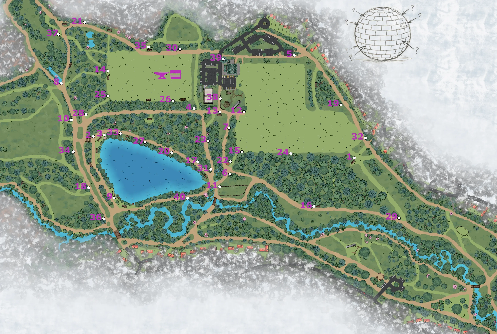

OPERATION GUINEA PIG — REPLAY RECONCILIATION LOG

You have just reviewed the live historical telemetry from our recent Holmebrook Park field deployment.
The Institute extends its official commendations to the exceptional field performances logged. Special recognition is filed for ---, who secured the absolute highest material valuation of the session, closely trailed by --- and ---.
However, an operation of this scale is never won by a single vector. Over a 3.5-hour operational window, 31 independent operative units mobilized across the park's terrain. Whether tracking ancient local lore or mastering the forge, their collective output was staggering: driving over 121km of total foot travel, uncovering 40 classified historical secrets, forging 68 unique items, and coordinating 24 direct inter-team market trades before the countdown hit zero.
The Institute is currently provisioning its next live sector assignment. Because this upcoming operation will be conducted under active Sandbox/Beta parameters to stress-test entirely new narrative loops, trade economics, and crafting paths, personnel registration slots are strictly rationed.
Whether your unit seeks to untangle the deep historical mysteries of the next sector or out-trade every syndicate on the field, your clearance paperwork is ready.
Secure your operative assignment before the upcoming registry locks.
FILE FORM 42 // AUTHORIZE ENLISTMENT ← RETURN TO INSTITUTE // HOME